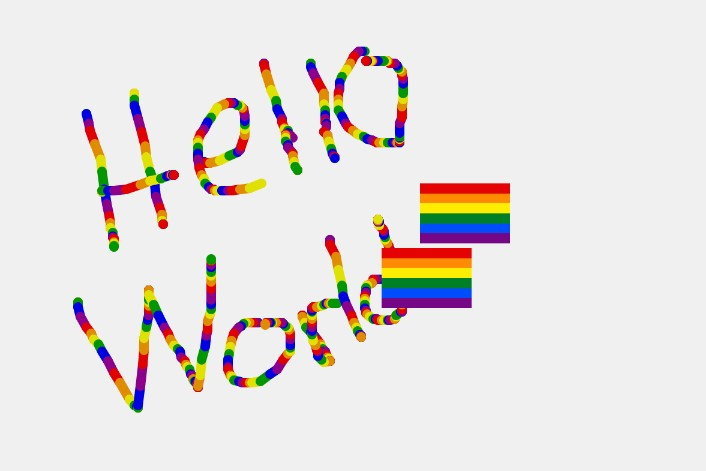
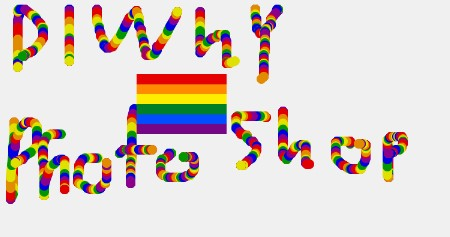

This version of photoshop allows you to paint anything you want, the only limitation is your imagination and the fact you can not change the colors, you are forced to paint with a brush the constantly cycles through the colors of the rainbow!  
var img;
var initials ='fs'; // your initials
var choice = '1'; // starting choice, so it is not empty
var screenbg = 240; // off white background
var click = 1;
function preload() {
// preload() runs once, it may make you wait
// img = loadImage('74.png');
img = loadImage('https://squadsteel.github.io\diyps2021_final_\74.png');
}
function setup() {
createCanvas(600, 400); // canvas size
background(screenbg); // use our background screen color
}
function draw() {
click++;
if ( click ==1 ){
stroke(225,0,0);//red
}
if ( click == 2 ){
stroke(225,140,0);//orange
}
if (click ==3 ){
stroke(225,225,0);//yellow
}
if ( click ==4 ){
stroke(0,150,0);//green
}
if( click ==5 ){
stroke(0,0,225);//blue
}
if ( click ==6 ){
stroke(140,0,140);//purple
}
if (click == 6){
click =0;
}
strokeWeight(8);
// line(mouseX, mouseY, pmouseX, pmouseY);
if (mouseIsPressed){
line(mouseX, mouseY, pmouseX, pmouseY);
}
if (keyIsPressed === true) {
image(img, mouseX-75, mouseY-25, 75, 50);
} else {
}
}
function newkeyChoice(toolChoice) { //toolchoice is the key that was pressed
// the key mapping if statements that you can change to do anything you want.
// just make sure each key option has the a stroke or fill and then what type of
// graphic function
if (toolChoice == '1' ) { // first tool
stroke(01);
ellipse(mouseX, mouseY, 10, 10);
line(mouseX, mouseY, pmouseX, pmouseY);
} else if (toolChoice == '2') { // second tool
stroke(20);
line(mouseX, mouseY, pmouseX, pmouseY);
} else if (toolChoice == '3') { // third tool
stroke(300, 100, 0, 80);
line(mouseX, mouseY, pmouseX, pmouseY);
} else if (toolChoice == '4') {
stroke(0, 0, 255);
line(mouseX, mouseY, pmouseX, pmouseY);
} else if (key == '5') { // this tool calls a function
stroke(0, 0, 255);
testbox(20, 20, 200);
testbox(200, 20, 20);
// make testbox do something!
// line(mouseX, mouseY, pmouseX, pmouseY);
} else if (toolChoice == '6') {
stroke(200);
line(mouseX, mouseY, pmouseX, pmouseY);
} else if (toolChoice == '7') {
fill(100, 200, 100);
rect(mouseX, mouseY, 20, 20);
} else if (toolChoice == '8') {
fill(300, 100, 0, 80);
rect(mouseX, mouseY, 20, 20);
} else if (toolChoice == '9') {
fill(300, 100, 0, 80);
rect(mouseX, mouseY, 40, 40);
} else if (toolChoice == '0') {
stroke(0, 0);
fill(random(255), random(255), random(255), random(255));
rect(mouseX, mouseY, 200, 150);
} else if (toolChoice == 'g' || toolChoice == 'G') { // g places the image we pre-loaded
image(img, mouseX-25, mouseY-25, 50, 50);
}
}
function testbox(r, g, b) {
// this is a test function that will show you how you can put your own functions into the sketch
x = mouseX;
y = mouseY;
fill(r, g, b);
rect(x-50, y-50, 100, 100);
}
function clear_print() {
// this will do one of two things, x clears the screen by resetting the background
// p calls the routine saveme, which saves a copy of the screen
if (key == 'x' || key == 'X') {
background(screenbg); // set the screen back to the background color
} else if (key == 'p' || key == 'P') {
saveme(); // call saveme which saves an image of the screen
key = ""; // reset the key so that it doesn't keep taking screenshots
}
}
function saveme(){
//this will save the name as the intials, date, time and a millis counting number.
// it will always be larger in value then the last one.
filename=initials+day() + hour() + minute() +second();
saveCanvas(filename, 'jpg');
// }
}